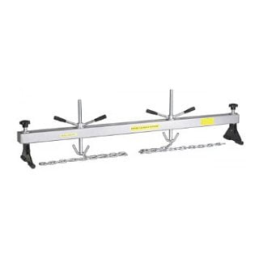

-
Hi everyone, i was wondering if you guys think this pickup tube i made would be strong enough. I had to modify the original z31 pickup tube and pan to fit the vg33. I mig welded/brazed it and im worried that i should have tig welded it. I posted some pics below. I remember trying to break it over my knee and couldn't but im worried about vibrations cracking the welds. Im just wondering if you guys were me if you would worry about it. Thanks you guys -
Done correctly brazing "should" be strong enough. Make sure all your brazes are 100% leak free. If you have a pin hole, like a straw with a hole it, pump will struggle to suck the oil up from the bottom of the pan.The Herd
85 z31 GLL N/A2T (7psi daily){Totaled 1-24-2012}
85 z31 GL N/A2T slightly modified
85 z31 GLL Turbo Kaminari converted to N/A
85 z31 GLL Turbo (parted out)(scrapped)
90 s13 se n/a (stock)Wife blew up the engine
88 xj40/xj6 (stock) Yard Art
88 Mighty Max
99 WJ 4.7 Limited -
alright i feel good about the strength then since its brazed and welded. As for making sure theirs no holes i did my best to make sure theirs no holes with the naked eye but i didn't pressure test it or anything. I think I'm just going to pull it back off and try and pressure test is or something. Only problem is the pick up tube has a screen on the other end so I'm trying to figure out how I'm going to seal that end off to do a test.. I'm thinking of just cutting the screen off which i don't really want to do but i don't really see another way. Or i could make a little slit in the screen to fit a cork in it then get a cork for the other end with a air fitting to hook to a compressor. If anyone has a better idea I'm all ears.
Also for a vg33 oil pressure should be like 20-30 psi at idle and 40 - 60 when driving correct?
Another question for the pros is have you guys been able to get the pan off with the engine still in the car? Ive heard you can lift the engine out a wee bit to get it to clear or drop the cross member or something rather but Ive never heard a sure fire way of doing it. (maybe because its very hard and people would rather pull the engine back out then mess about with any of that) -
I also reused the gasket on the pickup tube so im having second thoughts about doing that as well. Im thinking i should have got a new gasket for it… -
Always use a new gasket for the pick up tube. -
Been through the oil pan thing. If you have access to a lift and a hoist you can hoist the motor while the car's up as high as you can get it, because you'll need room, then you can drop the crossmember enough to get the pan out. If you *have* the lift and the hoist this is pretty straightforward. Otherwise you are gonna need to pull the engine.
Someone's gonna *say* it's possible to hoist the engine up high enough to do it with the car on jack stands. I tried this and just didn't see it working.
Wait, if you're doing a vg33 swap, why is the engine in the car? -
These are great for dropping the subframe without clogging up the underside with a jack. -
Well got engine in and she runs and starts but oil pickup tube must have a leak..no oil pressure..
So pulled my engine last night have the pan off and i need a little advice Z car pros.
How would you guys go about test the pickup tube since their is a screen on the end? Should i just cut the screen away or is it pretty vital in your eyes? I have access to a welder so i could try tacking it back together but the screen wouldn't be fully sealed and im afraid the welder would blow a hole through the screen.

Copyright © 2006–. All rights reserved. Privacy Policy